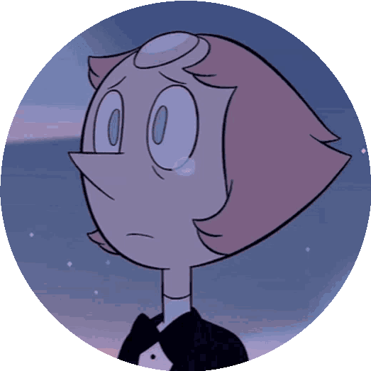

First Situation
In her perfect and tidy bedroom, Pearl relives her tragedies of war, where she cannot defend her beloved leader, Rose Quartz. At this moment, her room feels the effect of Rose's stone altering her surroundings and taking her back to the scene of the battle and creating Rose's deteriorated and morbid mirage. So, Pearl decides to:
